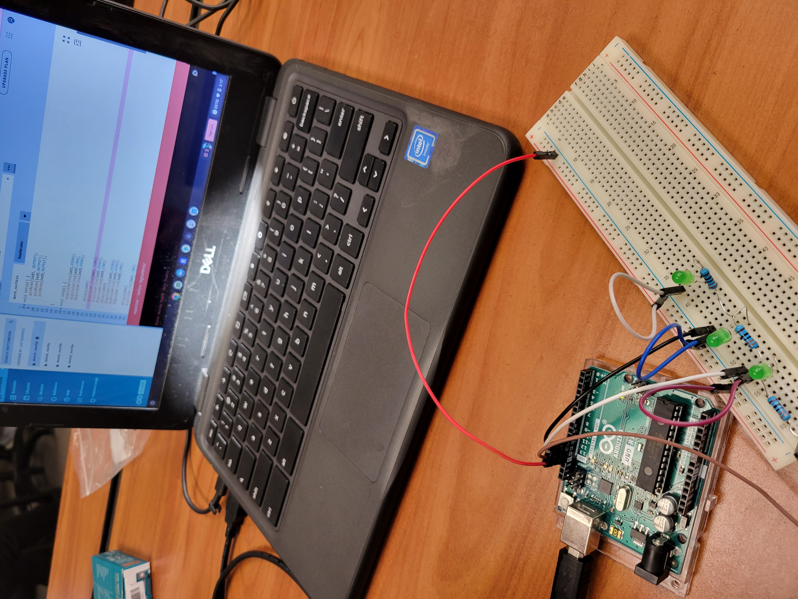

this is my first blog
[9/2/22] This week we worked on tinker cad.
We chose a household item to model, and tried to replicate it in tinkercad. I chose a bidet, and tried my best to replicate it (above)
We are also working on creating a Rube Goldberg machine using a combination of basic machines. The objective is to start with a baseball and end by popping a balloon with a needle.
[9/9/22] This week we worked on making a rube goldberg machine in tinkercad. A rube goldberg machine manipulates a chain reaction of multiple simple machines to complete a simple task in an overly complicated way.
[9/16/22] This week we continued to work on making the rube goldberg machine. We starte cutting out pieces with cardboard. We also competed in a Paper Boat Challenge in which we made a boat out of paper and tried to make it hold the most amount of weight for the greatest amount of time. We lost because we accidentally created holes in the bottom of our boat while folding it together, and it sunk almost immediately. (above)
[9/23/22] This week we finished the rube golberg machine by drawing nets of 3D shapes, cutting them out, and taping them together. We tested our rube goldberg machine and adjusted pieces of it slightly until it worked perfectly. (video above)

[9/30/22] This week I designed a prosthetic leg for a kangaroo. It is that shape so that it will allow them to jump around and run while also being simple enough to manufacture and durable enough to withstand their fast-paced lifestyle. It is supposed to be made out of carbon fiber for the best combination of flexibility and sturdiness. (image attatched above)

[10/20/22] This week my team and I deisgned, created and launched a bottle rocket. We used hot glue to add fins and a cone to the bottle to help with the aerodynamics. We also used the reaction between baking soda and vinegar to help propel our rocket further. (Above)
[10/27/22] This week I learned about enviornmental science, and how it is implemented in our everyday lives. We made water filters out of rocks and sand (above). The filter works because all of the dirty particles in the water get caught in the layers of rock as it trickles down.

[11/04/22] This week we started learing about electrical engineering. We learned the fundamentals of electrical enginnering, including basic terms like voltage, current, and resistance. We learned what resistors are, and how they limit the current of electricity in a circuit. We learned how to calculate the required resistance in a circuit using Ohms law, V=IR. We practiced Ohms law and applied what we learned by creating basic circuits using resistors and LEDs on a virtual breadboard in tinkercad. I created two circuits, one with resistors in parallel, and the other with resistors in series. (images attatched above)


[11/4/22] This week we worked with breadboards. We applied our knowledge from tinkercad and created series, parallel, and voltage divider circuits. (above) We used a multimeter to measure and track the voltage and resistance at different points of each of the circuits. On Wednesday, we as a class had a discussion on wheter or not it would be more time efficient to take a year-long math class, or to write from 1 to 1 million. I decided that it would be better to take a math class, with my reasoning listed in the PDF linked above
[11/11/22] This week we worked with arduinos. We learned the basics of arduino code, and programmed them to power the breadboard circuit. We were able to power multiple circuits at once and choose which ones we wanted to power using the arduino code. We replicated the circuits we made the previous week and made the leds light up in pattern with eachother.
[12/2/22] This week we started working on our spaghetti bridge project. The goal of the project is to create a bridge with the highest possible strength to weight ratio using only 20 spaghetti sticks and wood glue to bind it together. We wanted to use a howe truss with verticals bridge design, as research showed that that is very good at handling weight, however to meet the bridge's two foot length requirment, it is impossible to make a bridge of that type using only 200 inches of spaghetti (above). We constructed our first prototype and are waiting on the wood glue to dry before we can test it on monday (above too!!!!!!!).
[12/9/22] Unfortunately this week we discovered that due to unforseen circumstances out of our control, our bridge was destoryed before we were able to test it. Due to time constraints, we started building a new bridge, with a very simple design in mind. We lined all twenty spaghetti sticks in a row, and put a bunch of glue on it. Our bridge ended up being able to carry about two and a half pounds of weight before breaking. Although we were satisfied with the capabilites we saw in this bridge design, we were not content with the lack of sophistication and thought that went into constructing it. We scrapped the design and went back to the drawing boards.
[12/16/22] This week we designed a new bridge. We had liked the idea of the truss design, but weren't sure how to execute it. We drew out a variation of the truss design using equaliatoral triangles along the length of the bridge, and wrote out an equation to find if it is possible to construct with our aforementioned constraints. We discovered that if we wanted to make this bride, with four triangles on each side, the width of the bridge would have to be only five ninths of an inch. This was not practical, we decided, so we agreed that we would make both sides of the bridge, and just glue them on top of eachother. Thus, our horizontally laying equaliatoral triangle bridge was born. We were not able to test it before the day it was due, due to time constraints. On Friday, as we were getting ready to test it in front of the class, it broke.. Mr. Poole allowed us to test it anyways with the remaining section of bridge unbroken. It was able to carry 12.7x its own weight.